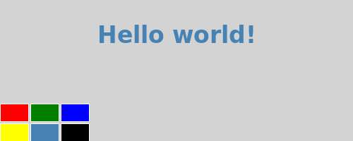

QML Tutorial 3 - States and Transitions
In this chapter, we make this example a little bit more dynamic by introducing states and transitions.
We want our text to move to the bottom of the screen, rotate and become red when clicked.

Here is the QML code:
Walkthrough
First, we create a new down state for our text element. This state will be activated when the MouseArea is pressed, and deactivated when it is released.
The down state includes a set of property changes from our implicit default state (the items as they were initially defined in the QML). Specifically, we set the y property of the text to 160, the rotation to 180 and the color to red.
Because we don't want the text to appear at the bottom instantly but rather move smoothly, we add a transition between our two states.
from and to define the states between which the transition will run. In this case, we want a transition from the default state to our down state.
Because we want the same transition to be run in reverse when changing back from the down state to the default state, we set reversible to true. This is equivalent to writing the two transitions separately.
The ParallelAnimation element makes sure that the two types of animations (number and color) start at the same time. We could also run them one after the other by using SequentialAnimation instead.
For more details on states and transitions, see Qt Quick States and the states and transitions example.